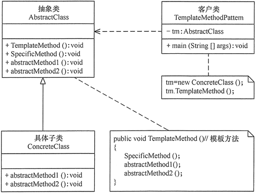

模板模式理解剖析以及应用

模板模式
定义一个操作中的算法骨架，而将算法的一些步骤延迟到子类中，使得子类可以不改变该算法结构的情况下重定义该算法的某些特定步骤。
在模板模式中，一个抽象类公开定义了执行它的方法的方式/模板。它的子类可以按需要重写方法实现，但调用将以抽象类中定义的方式进行。这种类型的设计模式属于行为型模式。
意图
- 定义一个操作中的算法的骨架，而将一些步骤延迟到子类中。模板方法使得子类可以不改变一个算法的结构即可重定义该算法的某些特定步骤。
解决问题
一些方法通用，却在每一个子类都重新写了这一方法。
何时使用？
- 有多个子类共有的方法，且逻辑相同。
- 重要的、复杂的方法，可以考虑作为模板方法。
应用环境举例
- 在造房子的时候，地基、走线、水管都一样，只有在建筑的后期才有加壁橱加栅栏等差异。
- 西游记里面菩萨定好的 81 难，这就是一个顶层的逻辑骨架。
- spring 中对 Hibernate 的支持，将一些已经定好的方法封装起来，比如开启事务、获取 Session、关闭 Session 等，程序员不重复写那些已经规范好的代码，直接丢一个实体就可以保存。
优点
- 它封装了不变部分，扩展可变部分。它把认为是不变部分的算法封装到父类中实现，而把可变部分算法由子类继承实现，便于子类继续扩展。
- 提取公共代码，便于维护。便于代码复用。
- 行为由父类控制，子类实现。
- 部分方法是由子类实现的，因此子类可以通过扩展方式增加相应的功能，符合开闭原则。
缺点
- 对每个不同的实现都需要定义一个子类，这会导致类的个数增加，系统更加庞大，设计也更加抽象，间接地增加了系统实现的复杂度。
- 父类中的抽象方法由子类实现，子类执行的结果会影响父类的结果，这导致一种反向的控制结构，它提高了代码阅读的难度。
- 由于继承关系自身的缺点，如果父类添加新的抽象方法，则所有子类都要改一遍。
注意
为防止恶意操作，一般模板方法都加上 final 关键词。
类图
- 抽象类/抽象模板（Abstract Class）
抽象模板类，负责给出一个算法的轮廓和骨架。它由一个模板方法和若干个基本方法构成。这些方法的定义如下。- 定义了算法的骨架，按某种顺序调用其包含的基本方法。
- 基本方法：是整个算法中的一个步骤，包含以下几种类型。
- 抽象方法：在抽象类中声明，由具体子类实现。
- 具体方法：在抽象类中已经实现，在具体子类中可以继承或重写它。
- 钩子方法：在抽象类中已经实现，包括用于判断的逻辑方法和需要子类重写的空方法两种。
- 具体子类/具体实现（Concrete Class）
具体实现类，实现抽象类中所定义的抽象方法和钩子方法，它们是一个顶级逻辑的一个组成步骤。
实现
- 抽象类
1
2
3
4
5
6
7
8
9
10
11
12
13
14
15
16
17
18
19abstract class AbstractClass {
//模板方法
public void TemplateMethod() {
SpecificMethod();
abstractMethod1();
abstractMethod2();
}
//具体方法
public void SpecificMethod() {
System.out.println("抽象类中的具体方法被调用...");
}
//抽象方法1
public abstract void abstractMethod1();
//抽象方法2
public abstract void abstractMethod2();
} - 具体子类
1
2
3
4
5
6
7
8
9class ConcreteClass extends AbstractClass {
public void abstractMethod1() {
System.out.println("抽象方法1的实现被调用...");
}
public void abstractMethod2() {
System.out.println("抽象方法2的实现被调用...");
}
} - 测试结果：
1
2
3
4
5
6public class TemplateMethodPattern {
public static void main(String[] args) {
AbstractClass tm = new ConcreteClass();
tm.TemplateMethod();
}
}1
2
3抽象类中的具体方法被调用...
抽象方法1的实现被调用...
抽象方法2的实现被调用...
实例
 创建一个定义操作的 Game 抽象类，其中，模板方法设置为 final，这样它就不会被重写。
Cricket 和 Football 是扩展了 Game 的实体类，它们重写了抽象类的方法。
TemplatePatternDemo使用 Game 来演示模板模式的用法。
创建一个定义操作的 Game 抽象类，其中，模板方法设置为 final，这样它就不会被重写。
Cricket 和 Football 是扩展了 Game 的实体类，它们重写了抽象类的方法。
TemplatePatternDemo使用 Game 来演示模板模式的用法。
- 创建一个抽象类，它的模板方法被设置为 final。
Game.java1
2
3
4
5
6
7
8
9
10
11
12
13
14
15
16
17
18public abstract class Game {
abstract void initialize();
abstract void startPlay();
abstract void endPlay();
//模板
public final void play(){
//初始化游戏
initialize();
//开始游戏
startPlay();
//结束游戏
endPlay();
}
} - 创建扩展了上述类的实体类。
Cricket.javaFootball.java1
2
3
4
5
6
7
8
9
10
11
12
13
14
15
16
17public class Cricket extends Game {
void endPlay() {
System.out.println("Cricket Game Finished!");
}
void initialize() {
System.out.println("Cricket Game Initialized! Start playing.");
}
void startPlay() {
System.out.println("Cricket Game Started. Enjoy the game!");
}
}1
2
3
4
5
6
7
8
9
10
11
12
13
14
15
16
17public class Football extends Game {
void endPlay() {
System.out.println("Football Game Finished!");
}
void initialize() {
System.out.println("Football Game Initialized! Start playing.");
}
void startPlay() {
System.out.println("Football Game Started. Enjoy the game!");
}
} - 测试
TemplatePatternDemo.java结果1
2
3
4
5
6
7
8
9
10public class TemplatePatternDemo {
public static void main(String[] args) {
Game game = new Cricket();
game.play();
System.out.println();
game = new Football();
game.play();
}
}1
2
3
4
5
6
7Cricket Game Initialized! Start playing.
Cricket Game Started. Enjoy the game!
Cricket Game Finished!
Football Game Initialized! Start playing.
Football Game Started. Enjoy the game!
Football Game Finished!